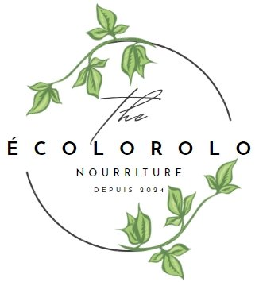

Notre mission:
Nous sommes une équipe dynamique et jeune déterminée à minimiser le gaspillage alimentaire
dans notre entourage. Comment faire? En fait, on veut promouvoir le partage des aliments entre
individus, épiceries, grossistes, etc. En gros, on veut réduire les émissions de carbone reliés
au gaspillage et éviter l'accumulation de matières organiques dans les dépotoirs.
Nous croyons en un avenir durable. En faisant preuve de pratiques
respectueuses de l'environnement, nous travaillons à créer un impact positif à long terme.
Notre engagement en faveur du développement durable guide toutes nos actions pour un monde plus
vert et plus équitable.
Adriana Vitullo, Colin Dupré et Aleksandra Urban
